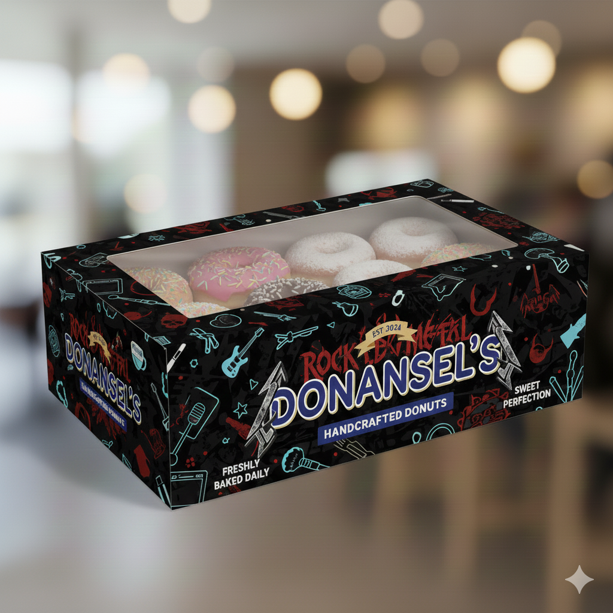
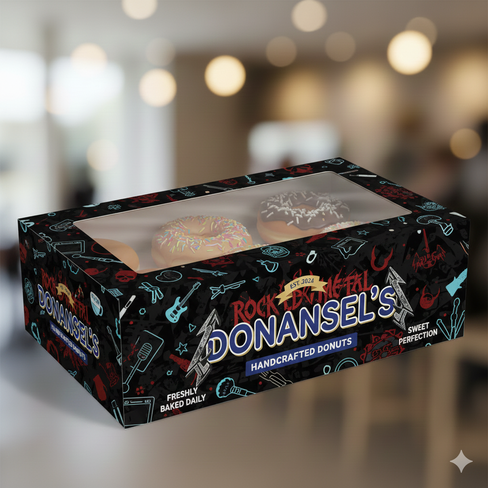
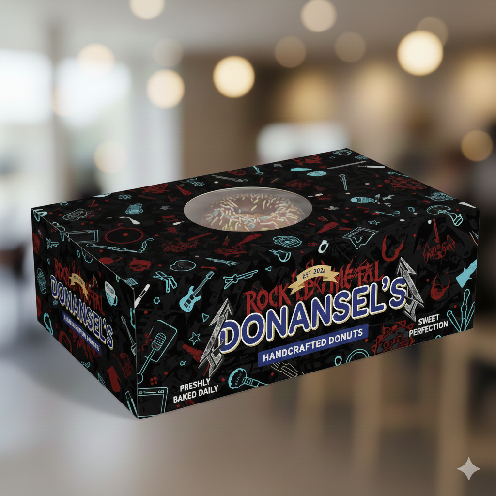

¿Por qué elegir nuestras Donas Donansel's?
¡Porque hasta Naruto y Sasuke las aman! 🌸🍩 Nuestras donas combinan sabor, diversión y calidad, haciendo que cada mordida sea una experiencia épica digna de un ninja. Ingredientes frescos, recetas perfectas y pasión por cada dona que hacemos.
Presupuesto para 12 donas
1. Ingredientes
| Ingrediente | Cantidad usada (12 donas) | Precio del paquete | Costo proporcional |
|---|---|---|---|
| Harina 0000 | 500 g | $900 (1 kg) | $450 |
| Levadura fresca | 25 g | $300 (50 g) | $150 |
| Azúcar | 125 g | $300 (250 g) | $150 |
| Huevos | 1 unidad | $700 (2 huevos) | $350 |
| Manteca | 40 g | $600 (80 g) | $300 |
| Leche | 150 ml | $250 (300 ml) | $125 |
| Aceite para freír | 0.5 L aprox. | $3.090 (1 L) | $1.545 |
| Esencia + sal | — | $200 | $100 |
| Cobertura (glasé/choco) | mitad del valor | $1.200 | $600 |
| Total ingredientes | $3.770 | ||
2. Costos adicionales
| Concepto | Costo |
|---|---|
| Gas / electricidad | $400 |
| Envases (caja + servilletas) | $600 |
| Mano de obra | $500 |
| Total extras | $1.500 |
Total final
$3.770 + $1.500 = $5.270
Costo por dona: $439 aprox.
Presupuesto para 6 donas
1. Ingredientes
| Ingrediente | Cantidad usada (6 donas) | Costo proporcional |
|---|---|---|
| Harina 0000 (250 g) | media taza grande | $225 |
| Levadura fresca (12.5 g) | — | $75 |
| Azúcar (62.5 g) | — | $75 |
| Huevo (0.5 unidad) | mitad de 1 | $175 |
| Manteca (20 g) | — | $150 |
| Leche (75 ml) | — | $62 |
| Aceite para freír (0.25 L aprox.) | — | $772 |
| Esencia + sal | — | $50 |
| Cobertura (glasé/choco) | — | $300 |
| Total ingredientes | $1.884 | |
2. Costos adicionales
| Concepto | Costo |
|---|---|
| Gas / electricidad | $200 |
| Envases (caja + servilletas) | $300 |
| Mano de obra | $250 |
| Total extras | $750 |
Total final
$1.884 + $750 = $2.634
Costo por dona: $439 aprox.
Presupuesto para 1 dona
1. Ingredientes
| Ingrediente | Costo proporcional |
|---|---|
| Harina | $37,50 |
| Levadura fresca | $12,50 |
| Azúcar | $12,50 |
| Huevo (1/12 de maple aprox.) | $29,20 |
| Manteca | $25 |
| Leche | $10,40 |
| Aceite para freír | $128,70 |
| Esencia + sal | $8,30 |
| Cobertura (glasé/choco) | $50 |
| Total ingredientes | $314 |
2. Costos adicionales
| Concepto | Costo |
|---|---|
| Gas / electricidad | $33,30 |
| Envase | $50 aprox. |
| Mano de obra | $41,70 |
| Total extras | $125 |
Total final
$314 + $125 = $439
Costo real de producir 1 dona: $439 aprox.
Calidad de Donas Donansel's
Puntos esenciales que deben cumplirse para garantizar seguridad y ventas sin complicaciones.
1. Requisitos Legales (Lo obligatorio)
- El local debe estar habilitado y cumplir con bromatología (pisos/paredes impecables, certificado de fumigación al día, tanque de agua limpio).
- Todo el personal debe contar con carnet de manipulador vigente.
2. Cocina y Producción
- Materia prima:
- Las harinas deben almacenarse sobre tarimas, nunca en el piso.
- Se debe usar primero lo más viejo (FIFO).
- Los huevos solo se lavan justo antes de usar.
- Fritura (punto crítico):
- El aceite debe mantenerse entre 175°C y 180°C; si humea, no es apto.
- Se filtra a diario y se usa tira reactiva para determinar cuándo cambiarlo.
- Los rellenos siempre deben refrigerarse y decorarse con utensilios o guantes.
3. Venta al Público
- Las donas deben estar protegidas detrás de vidrios o cúpulas.
- Se deben despachar con pinzas, nunca con la mano.
- Se debe colocar cartel visible sobre alérgenos (harina, huevo, leche).
- Se venden únicamente en el día (vida útil 24 hs).